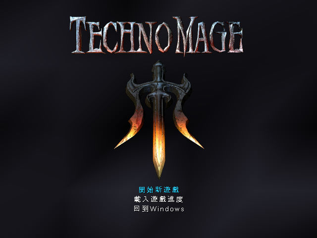
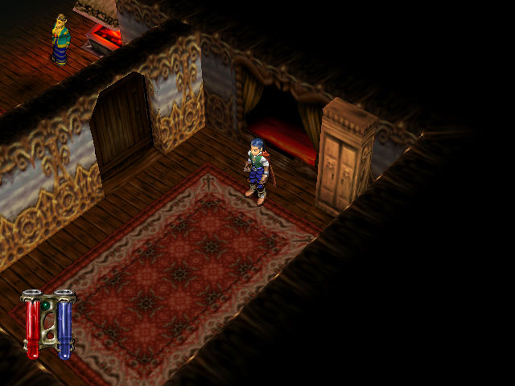

名稱：魔法危機 (TechnoMage: Return of Eternity，中文版)
簡介：Sunflowers 2001年出品的角色扮演遊戲，以3D畫面呈現，採單人即時方式戰鬥，2002
年由華義中文化並代理發行 [待補]。


保護：無
備註：VirtualBox需搭配WineD3D，但仍略有貼圖問題，虛擬機建議使用VMware。
操作：
上下左右 = 移動
Z/X = 左右轉動視角
Ctrl = 動作（攻擊／開門／交談／調查等）
Alt = 跳躍
C = 施放魔法
V = 使用工具
F1 = 更換武器
F2 = 更換魔法
M = 地圖
Q = 任務日誌
I或S = 道具欄